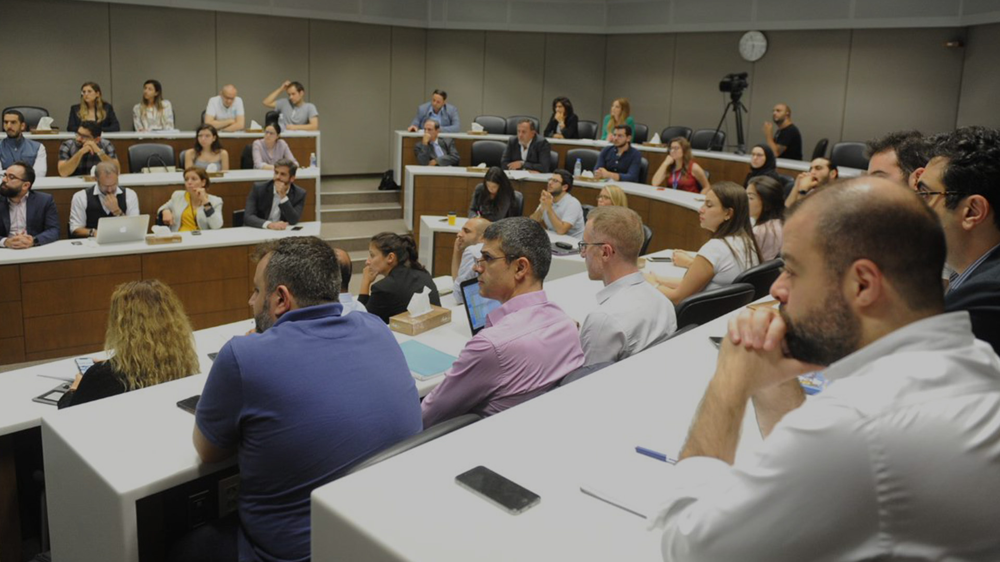
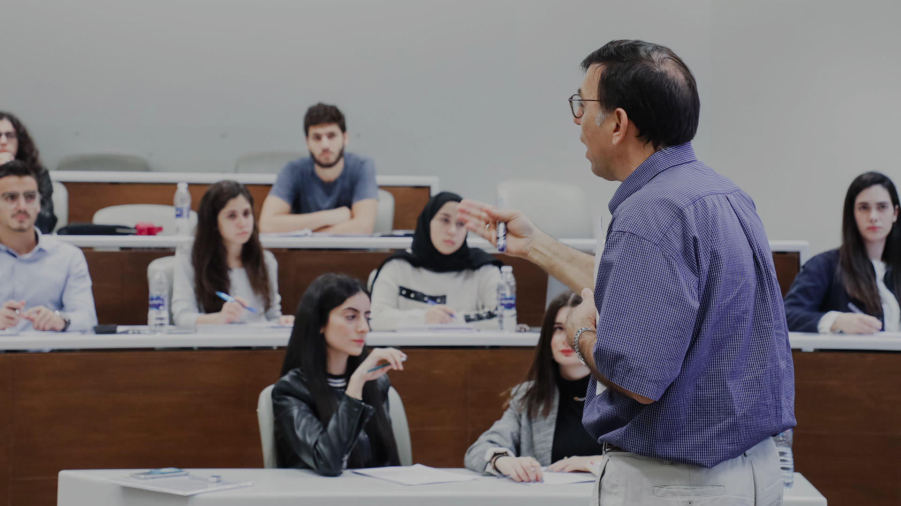
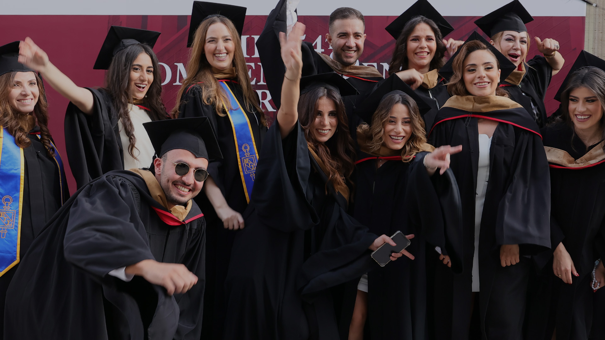
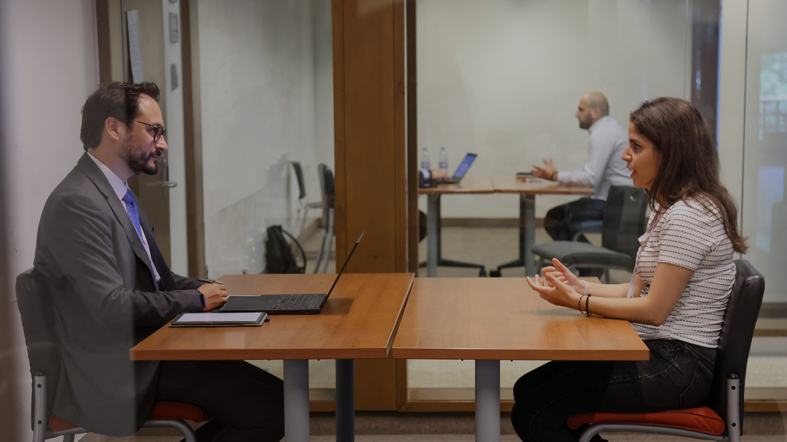
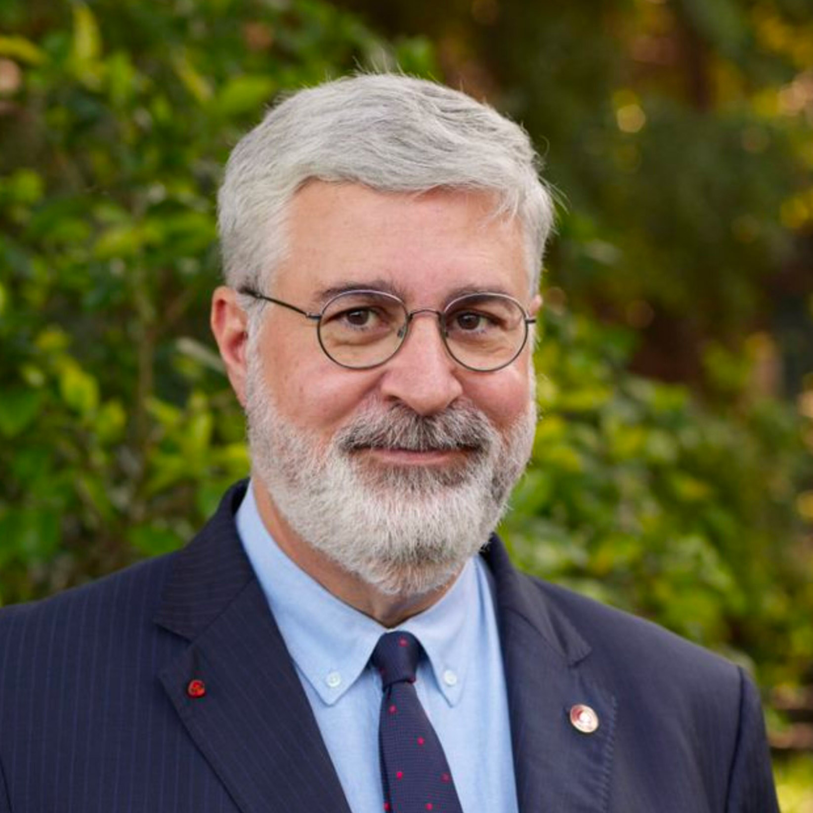

Business Education at AUB now holds two global accreditation crowns, AACSB and EQUIS,
across both shores of the Mediterranean.
The first business school in Lebanon to earn EQUIS accreditation.
The first business education institution in Cyprus to earn EQUIS accreditation.
Global accreditation crowns held simultaneously: AACSB and EQUIS.
One of only five EQUIS-accredited business schools in the region.
EFMD Quality Improvement System (EQUIS) accreditation is a globally recognised mark of excellence for business and management education. It involves rigorous evaluation based on criteria such as academic programmes, faculty quality, research output, internationalisation and corporate relevance.
A connected strategic vision across Beirut and Paphos.
6-degree programs benchmarked against international peers.
Faculty that connect research, teaching, and practice.
Network of partner institutions across Europe, MENA, and beyond.
Active partnerships with regional and international employers.
Commitment to responsible leadership and sustainable impact.
Academic and student support systems enabling quality.
Leading in regional rankings and evidence-based reflection.
EQUIS accreditation is not simply received. It is earned.
It follows years of self-assessment, evidence gathering, documentation, peer review, and dialogue with students, faculty, staff, alumni, employers, and partners.
For Business Education at AUB, the process brought together work across Beirut and Paphos, demonstrating not only what has been achieved, but how the schools continue to improve.
Across Beirut and Paphos, AUB's business education community is built on a common academic vision. EQUIS accreditation recognizes the strength of this connection: two locations, aligned around quality, relevance, impact, and internationally benchmarked standards.

EQUIS strengthens confidence in the education students receive. It signals that programs, learning experiences, faculty engagement, and student support have been reviewed against international standards.

EQUIS recognizes the teaching, research, mentorship, engagement, and continuous improvement led by faculty & staff across the business education community.

As AUB's business education reputation grows, alumni benefit from enhanced institutional visibility and international recognition.

Graduates from a school that meets the same standard as the most respected institutions in Europe and North America. Hired with confidence.
For parents and families, EQUIS offers added confidence that their children are studying in a business education environment recognized for quality, care, and international standards.
This milestone shows that business education built in the region can meet global standards while remaining connected to regional realities and needs.
The 100th business school outside the US to earn AACSB Accreditation.
The first five-year review confirms continued progress and commitment.
Reaffirmation arrives as Lebanon enters its deepest economic crisis. The standard does not change.
Independent recognition of OSB's social and economic impact on its community.
Reaffirmation extended to business programs at FoB at AUB Mediterraneo in Paphos.
A second global accreditation crown. The story continues.

“The accreditation recognizes the strength of AUB's integrated academic model across its campuses, while also highlighting the distinct contributions of the Suliman S. Olayan School of Business and the Faculty of Business at AUB Mediterraneo. This distinction is a clear indicator of AUB's global visibility and reinforces our broader vision to advance high-quality business education, leadership development, applied research, and societal impact across the Middle East, the Mediterranean, and beyond.”
Read More“EQUIS accreditation is a seal of excellence for business education at AUB. Achieving it alongside our AACSB accreditation places us among a select group of business schools worldwide that hold the 'Double Crown' distinction, providing our students with a world-class learning experience, enhanced global credibility, and greater opportunities for academic and professional success.”
“EQUIS accreditation is a significant recognition of the quality, relevance, and international standing of AUB's business programs. It reflects the collective efforts of our faculty, staff, students, alumni, advisory board members, and partners, and affirms our commitment to developing responsible leaders who can contribute meaningfully to business and society.”
“EQUIS accreditation marks a defining milestone for the Faculty of Business at AUB Mediterraneo. It affirms that the faculty we are building in Paphos is grounded in AUB's tradition of academic excellence. For our students and community, it is a confirmation that our journey begins with a strong foundation and is already aligned with European and internationally recognized standards of excellence.”
“Accreditation has value when it strengthens how an institution thinks, learns, and improves. The EQUIS process gave us the opportunity to reflect honestly on our programs, processes, stakeholder engagement, and quality systems, and to show how evidence informs our work across Beirut and Paphos. Its real value will be seen in how consistently we turn that reflection into meaningful improvement for our students, faculty, partners, and wider region.”